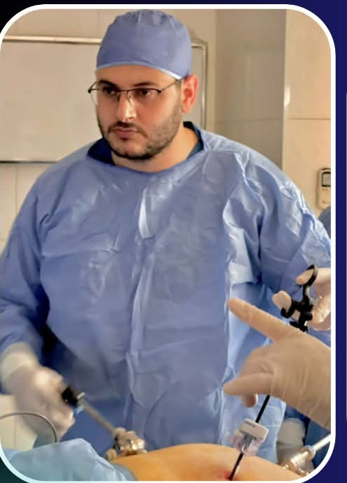

ما هي عملية تكميم المعدة؟
شرح مبسط لطبيعة استئصال جزء من المعدة لتقليص حجمها وسعتها، وكيفية تقييم الملاءمة والمخاطر والبدائل بالتعاون مع الفريق الطبي المعالج.
أهلاً بكم في المنصة الطبية الرسمية للتوعية الجراحية وخدمات الرعاية الصحية المتقدمة. تهدف هذه المنصة إلى تقديم معرفة طبية موثوقة ومبسطة، وتيسير الاستفسار وتنسيق المواعيد المباشرة عبر واتساب.

التزام مهني وأخلاقي بتقديم رعاية جراحية دقيقة وتوعية صحية مبنية على الدلائل الإكلينيكية
د. أحمد جودة ناجح، أخصائي الجراحة العامة والمناظير وجراحة السمنة والشرج. تهدف هذه الصفحة إلى التعريف بالتخصصات الطبية وتقديم معلومات توعوية مبسطة تساعد الزائر على فهم الموضوعات الصحية والاستعداد لمناقشتها مع الطبيب المختص.
تقوم الرؤية الإكلينيكية على أساس التقييم الطبي الدقيق لكل مريض بصورة فردية ومستقلة، واختيار التدخل الجراحي أو المنظاري الأنسب وفق أعلى معايير السلامة ومكافحة العدوى، مع التركيز على المتابعة الدورية المستمرة بعد العمليات لضمان التعافي الأمثل.
مجموعة متكاملة من التدخلات الجراحية العامة وجراحات المناظير والسمنة وجراحات الشرج
تشخيص وعلاج الحالات الجراحية التقليدية بمختلف تصنيفاتها، بما في ذلك جراحات الفتق، استئصال المرارة والزائدة، والأورام السطحية، مع الالتزام الصارم ببروتوكولات الأمان.
إجراء التدخلات الجراحية الدقيقة عبر شقوق مجهرية متناهية الصغر، مما يقلل بشكل ملموس من الآلام الناتجة عن الجراحة، ويحد من النزيف، ويسرّع وتيرة التعافي والعودة للحياة الطبيعية.
عمليات تكميم المعدة وجراحات السمنة المفرطة، المبنية على تقييم شامل لمؤشر كتلة الجسم والحالة الصحية العامة، مع وضع خطط المتابعة الغذائية والطبية المستمرة.
العلاج المتخصص لأمراض الشرج الشائعة كالبواسير، والشرخ الشرجي، والناسور، والخراجات، بأحدث التقنيات الطبية التي تضمن راحة المريض والحد من فرص الانتكاس.
مقالات طبية مبسطة ومعلومات إرشادية موثوقة لمساعدة المرضى وعائلاتهم على فهم الخيارات العلاجية

شرح مبسط لطبيعة استئصال جزء من المعدة لتقليص حجمها وسعتها، وكيفية تقييم الملاءمة والمخاطر والبدائل بالتعاون مع الفريق الطبي المعالج.

توضيح مؤشر كتلة الجسم (BMI)، الأمراض المصاحبة، ومحاولات العلاج السابقة، والتأكيد على أن الجراحة ليست قرارًا عشوائيًا لكل من يعاني زيادة الوزن.

مقارنة علمية دقيقة حول حجم الشقوق، الأدوات المستخدمة، مدة الاستشفاء، وكيف يتم تحديد النهج الجراحي الأنسب لكل حالة وفق ظروف المريض.

دليل الخطوات التمهيدية قبل التدخل الجراحي: الفحوصات الطبية، مراجعة الأدوية المزمنة، تعليمات الصيام، واستشارة أطباء التخدير والتخصصات ذات الصلة.

أهمية الالتزام بالمواعيد المحددة للزيارة الإكلينيكية، ومراقبة التئام الجروح، والتغذية السليمة، والتعامل السريع مع أي أعراض غير معتادة.

معلومات توعوية عامة عن الأعراض الشائعة (الألم، النزيف، التورم) وأهمية الفحص السريري الدقيق دون حرج أو تأجيل لتجنب المضاعفات.
تعرّف على مجموعة من الخدمات الجراحية ومعلومات توعوية مبسطة تساعدك على فهم الحالات الطبية وخيارات العلاج. يحدد الطبيب الإجراء الأنسب بعد الفحص والتقييم.
إجراءات جراحية تهدف إلى تقليل حجم المعدة أو تغيير مسار الجهاز الهضمي للمساعدة على إنقاص الوزن، وفقًا لتقييم الحالة.
إجراء جراحي لإصلاح فتق الحجاب الحاجز، وقد يساعد في علاج الارتجاع لدى المرضى المناسبين.
إزالة المرارة في حالات مثل حصوات المرارة المصحوبة بأعراض أو بعض حالات الالتهاب، وفقًا للتقييم الطبي.
إزالة الزائدة الدودية الملتهبة بالمنظار عندما تكون هذه الطريقة مناسبة للحالة.
إجراء متخصص قد يُستخدم لبعض حالات فرط التعرق الشديد، بعد تقييم الخيارات العلاجية ومناقشة الفوائد والمخاطر.
إعادة الأنسجة البارزة ومعالجة ضعف جدار البطن، وقد تُستخدم شبكة جراحية بحسب الحالة.
علاج الفتق حول السرة وإصلاح موضع الضعف في جدار البطن وفقًا للتقييم.
إصلاح الفتق الذي يظهر في موضع جراحة سابقة، مع اختيار طريقة الترميم المناسبة للحالة.
علاج الأوردة المتضخمة حول الخصية في الحالات التي تستدعي التدخل، وفقًا لتقييم الأعراض والخصوبة.
تقييم وعلاج الخصية غير النازلة، وقد يتطلب الأمر تدخلًا جراحيًا حسب العمر والحالة.
تقييم كتل الثدي وعلاجها جراحيًا عند الحاجة، مع مراعاة طبيعة الورم والخطة العلاجية المناسبة.
تقييم عقيدات وأورام الغدة الدرقية وتحديد الحاجة إلى الاستئصال الجزئي أو الكلي حسب التشخيص.
علاج تضخم أنسجة الثدي لدى الرجال جراحيًا في الحالات المناسبة بعد التقييم الطبي.
إجراء لنحت مناطق محددة من الجسم لدى المرشحين المناسبين، ولا يُعد بديلًا عن علاج السمنة أو إنقاص الوزن العام.
تقييم البواسير واختيار العلاج المناسب حسب شدتها والحالة الصحية، مع توضيح أن الليزر ليس الخيار الأفضل لجميع الحالات.
تقييم وعلاج القناة غير الطبيعية بين القناة الشرجية والجلد، مع مراعاة الحفاظ على وظيفة العضلات العاصرة. تُحدد التقنية المناسبة بواسطة الجرّاح.
علاج التمزق في بطانة القناة الشرجية، مع البدء بالعلاج التحفظي عند ملاءمته والنظر في التدخل الجراحي للحالات المختارة.
علاج الكيس أو المسار الشعري في منطقة العصعص، وقد يشمل التنظيف أو الجراحة بحسب الحالة.
تصريف التجمع الصديدي عند الحاجة وتقييم الحالة لمنع المضاعفات.
علاج انغراس حافة الظفر في الجلد، مع معالجة الالتهاب واختيار التدخل المناسب حسب شدته.
إزالة الكيس الجلدي عند وجود داعٍ طبي أو أعراض، بعد تقييم طبيعة الكتلة.
تقييم وإزالة الأكياس أو المسارات المرتبطة بتراكم الشعر، وفقًا للتشخيص.
تقييم الأكياس المملوءة بسائل قرب المفاصل أو الأوتار، وتحديد الحاجة إلى المراقبة أو العلاج أو الاستئصال.
إزالة الطحال في حالات طبية محددة مثل بعض الإصابات أو أمراض الدم، بعد تقييم دواعي الجراحة ومخاطرها.
تقييم الأورام الحميدة والخبيثة بالجهاز الهضمي وتحديد الخطة الجراحية المناسبة حسب التشخيص ومكان الورم.
علاج انسداد الأمعاء وفقًا لسببه وشدته، وقد يتطلب تدخلًا عاجلًا.
علاج التجمعات الصديدية بالثدي عند الحاجة، مع تقييم السبب ووضع خطة علاج مناسبة.
تقييم جروح وقرح القدم لدى مرضى السكري، مع العناية بالجرح وتحديد الحاجة إلى تدخل جراحي ضمن خطة علاج متكاملة.
إجراء طبي يُناقش وفقًا للعمر والحالة الصحية والموافقة المستنيرة، مع الالتزام بمعايير السلامة والرعاية المناسبة.
تقييم الحروق وتحديد درجة الإصابة، وتنظيف الجروح وتوفير الضمادات والعلاج المناسب بحسب شدة الحالة.
جرّب البحث بكلمات أخرى أو إعادة ضبط عوامل التصفية لعرض كافة الخدمات.
رسومات بيانية وفيديوهات توضيحية مبسطة لشرح المفاهيم الجراحية للمرضى بأعلى معايير الخصوصية

رسم بياني يوضح أماكن المنافذ المجهرية والأدوات الجراحية داخل تجويف البطن دون فتح جراحي كبير.

توضيح مبسط لموضع قبة المعدة والجزء المستأصل وكيفية تشكيل الأنبوب المعدي الجديد.

مقطع إرشادي توعوي قيد الإعداد لشرح أهم النصائح للمرضى قبل الدخول إلى غرفة العمليات.
رسائل شكر وتقدير حقيقية وموثقة وردت من المرضى الكرام، تم حجب الأسماء والصور الشخصية احترامًا لخصوصية المريض واللوائح الطبية.

"والله الحمد لله مفيش ألم من بعد العملية وجرح بسيط جداً وخياطة تجميل.. مسهل العملية قبل ما نعملها مفيش قلق ولا خوف"

"ما شاء الله فوق الممتازة.. معاملة محترمة جداً والمتابعة ممتازة.. ربنا يبارك للدكتور شخص محترم وشاطر"

"ربنا يصلح ما بين يديه، علاقته مع المريض ذو خلق عالي جداً.. ربنا يجزيه خير ودائماً من نجاح إلى نجاح"

"ربنا يبارك فيك يا دكتور.. ونعم الناس والأدب والأخلاق، ربنا يزيدك علم يارب العالمين"

"ربنا يوفقك يا دكتور، تستاهل كل خير والله.. أخلاق ومهارة عالية"

"تسلم ايد حضرتك بجد، الجرح بقي ماشاء الله بدأ يبقى مش باين وحلو أوي.. أنا مبسوطة جداً ربنا يفرح قلبك ويباركلك"

"منور عباد الرحمن يا دكتور.. عملياتك تتكلم عنك، أمانة وإخلاص متناهي جزاك الله كل خير"

"كنت قلقان جداً قبل العملية، لكن من أول الكشف لحد ما خرجت من المستشفى حاسس إني في إيد أمينة.. ربنا يبارك لك يا د. أحمد"

"كلام مرضانا أكبر دليل على ثقتكم — شكراً لكل مريض وثق فينا وشاركنا تجربته"
يقدم د. أحمد جودة ناجح خدمات الكشف والاستشارة الجراحية في 5 عيادات ومجمعات طبية
مواعيد الكشف والتنسيق متاحة مسبقًا عبر واتساب لضمان راحتكم وتقليل وقت الانتظار.
مواعيد الكشف والتنسيق متاحة مسبقًا عبر واتساب لضمان راحتكم وتقليل وقت الانتظار.
مواعيد الكشف والتنسيق متاحة مسبقًا عبر واتساب لضمان راحتكم وتقليل وقت الانتظار.
مواعيد الكشف والتنسيق متاحة مسبقًا عبر واتساب لضمان راحتكم وتقليل وقت الانتظار.
مواعيد الكشف والتنسيق متاحة مسبقًا عبر واتساب لضمان راحتكم وتقليل وقت الانتظار.
نسعد باستقبال استفساراتكم وترتيب مواعيد الكشف عبر القنوات الرسمية المعتمدة. نوصي بالتواصل عبر واتساب لسرعة الرد وتأكيد التوقيت المناسب.
اختر العيادة والتخصص الجراحي المطلوب لإنشاء رسالة استفسار مخصصة ترسل بضغطة زر إلى واتساب الدكتور: